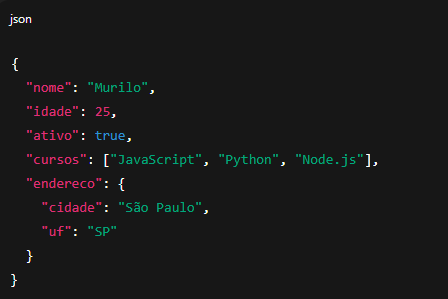

O que é o Event loop no Node.js?
O event loop é o que permite ao Node.js executar código não bloqueante — ou seja, continuar rodando enquanto
espera por eventos como respostas de rede, tempo de espera (setTimeout) ou leitura de arquivos.
Node.js é single-threaded, mas graças ao event loop e à libuv (uma biblioteca em C usada internamente), ele consegue lidar com operações assíncronas eficientemente.
Fases do Event loop
O loop é dividido em várias fases principais, cada uma com sua fila de callbacks:
- Timers - Executa callbacks agendados por setTimeout() e setInterval().
- Pending Callbacks - Executa callbacks de operações I/O que foram adiadas.
- Idle, Prepare - Usado internamente pelo Node (você geralmente não lida com isso diretamente).
- Poll - Aguarda por novas conexões, dados, etc. Se houver callbacks pendentes, executa-os.
- Check - Executa callbacks agendados com setImmediate().
- Close Callbacks Executa callbacks de encerramento, como socket.on('close').
O que é callback?
Em programação, um callback é uma função passada como argumento para outra função, que é então chamada posteriormente dentro da função externa. Em termos mais simples, é como entregar um bilhete para alguém dizendo: "Por favor, me ligue quando terminar de fazer isso". A função original faz algo e, ao terminar, "chama de volta" a função que você passou como argumento.
Exemplo:
JavaScript
function saudacao(nome) {
console.log("Olá,
" + nome + "!");
}
function processarUsuario(callback) {
const nome = "Murilo";
callback(nome); // Executa a função saudacao com
o nome como argumento
}
processarUsuario(saudacao);
Saída:
JavaScript
Olá, Murilo!
O que é HTTP?
O HTTP (Hypertext Transfer Protocol ou Protocolo de Transferência de Hipertexto em português) é um protocolo de comunicação. E um protocolo que especifica como será a comunicação entre um navegador e um servidor web. Request e Response. E através dele o cliente e o servidor conseguem se comunicar, seguindo um conjunto de regras bem definidos (por isso chamamos de protocolo).
Por exemplo, se estivermos falando de uma aplicação web, o cliente é o navegador, ele envia um pedido para o servidor web usando o pratocalo HTTP, com base nesse pedido, se tudo estiver correto, o servidor responde também usando o mesmo protocolo o conteúdo solicitado.
REQUEST
A Request ou requisição traduzindo diretamente para português, é o pedido que um cliente realiza a nosso servidor. Esse pedido contém uma série de dados que são usados para descrever exatamente o que o cliente precisa.
No navegador toda vez que trocamos de página ou apertamos enter na barra de endereço uma nova request é feita.
RESPONSE
Vimos que o cliente envia uma Request (requisição) ao servidor. Essa requisição possui todas as informações do que a cliente espera receber de volta.
O servidor web ao receber essas informações precisa enviar uma resposta ao cliente, nesse ponto entra a Response. A Response (resposta) nada mais é do que a resposta que o servidor envia ao cliente.
Essa resposta pode conter os dados que realmente o cliente esperava receber ou uma resposta informando que alguma coisa deu errado.
Verbos HTTP
Os verbos HTTP (também chamados de métodos HTTP) definem a ação que o cliente deseja realizar sobre um recurso (como uma página, um dado ou um arquivo) no servidor.
-GET - ler dados - Buscar uma página ou informação
-POST - criar algo novo - Enviar formulário, cadastrar usuário
-PUT - atualizar um recurso por completo - Substituir dados existentes
-DELETE - excluir um recurso - Remover item de um banco de dados
-PATCH - atualizar parcialmente - Atualizar só parte de um recurso
O que são Query Params
Query Params (ou parâmetros de consulta) são valores passados na URL para enviar informações ao servidor em uma requisição GET (e em outras, se necessário).
Eles vêm após o ? na URL e seguem o formato: chave = valor
Exemplo de url com Query Params:
https://site.com/produtos?categoria=roupas&tamanho=M&ordenar=preco
Aqui temos 3 query params:
- categoria = roupas
- tamanho = M
- ordenar = preco
Sintaxe:
- Começa com ?
- Cada par chave = valor
- Parâmetros múltiplos são separados por &
Exemplo com JavaScript
JavaScript
const url = new URL("https://site.com/produtos?categoria=camisa&cor=azul");
console.log(url.searchParams.get(
"categoria")); // camisa
console.log(url.searchParams.get(
"cor")); //
azul
Query Params
Query params = ?teste = 1
http://api.com/celulares?name=sansumg&preco=2000
O que são Route Params (Parâmetros de Rota)?
Route Params (ou parâmetros de rota) são valores dinâmicos inseridos diretamente na URL, como parte do caminho da rota, e não depois do ? como os query params.
São muito usados para identificar recursos específicos, como um ID de usuário, produto ou postagem.
Route Params
Route params = /users/:id
GET - http://api.com/movies/1
DELETE - http://api.com/movies/1
PUT - http://api.com/movies/1
O que são Body Params?
Body Params (ou parâmetros do corpo) são dados enviados dentro do corpo da requisição HTTP, normalmente usados em métodos como POST, PUT ou PATCH — ou seja, quando o cliente envia dados ao servidor (em vez de apenas pedir algo).
Quando usar Body Params?
Quando você quer enviar dados complexos ou sensíveis (como senhas, formulários, JSON), geralmente em requisições que modificam dados no servidor.
Exemplo real (JSON no corpo da requisição)
Requisição:
http
POST /usuarios
Content-Type: application/json
{
"name": "Murilo",
"email": "user@email.com",
"password": "123456"
}
(
{
method: 'post',
url: 'http://servidor.com/user/12345',
data: {
"name": "Murilo",
"email": "user@gmail.com",
"password": "123456"
}
}
);
Códigos de Status HTTP
Os códigos de status HTTP são respostas do servidor indicando o resultado de uma requisição feita pelo cliente (navegador, app, etc.).
Eles são sempre um número de 3 dígitos e fazem parte da resposta HTTP.
Grupos principais:
| Faixa | Significado |
| 1xx | 🔄 Informativos |
| 2xx | ✅ Sucesso |
| 3xx | 🔀 Redirecionamento |
| 4xx | ❌ Erro do cliente |
| 5xx | 💥 Erro do servidor |
Código 1xx - Informativos (menos comuns)
| Código | Significado |
| 100 Continue | O cliente pode continuar a requisição |
| 101 Switching Protocols | O protocolo está sendo alterado (ex: para WebSocket) |
Código 2xx - Sucesso
| 200 OK | Requisição bem-sucedida |
| 201 Created | Recurso criado com sucesso |
| 204 No Content | Requisição processada, mas sem resposta |
Código 3xx - Redirecionamento
| Código | Significado |
| 301 Moved Permanently | URL mudou para sempre |
| 302 Found | Redirecionamento temporário |
| 304 Not Modified | Conteúdo não mudou desde a última requisição (cache) |
Códigos 4xx - Erro do cliente
| Código | Significado |
| 400 Bad Request | Requisição malformada |
| 401 Unauthorized | Requer autenticação |
| 403 Forbidden | Acesso negado |
| 404 Not Found | Recurso não encontrado |
| 405 Method Not Allowed | Método HTTP não permitido |
Códigos 5xx - Erros do servidor
| Código | Significado |
| 500 Internal Server Error | Erro interno do servidor |
| 501 Not Implemented | Funcionalidade não implementada |
| 502 Bad Gateway | Resposta inválida de outro servidor |
| 503 Service Unavailable | Servidor fora do ar ou sobrecarregado |
🔐 O que é o HTTPS?
HTTPS significa HyperText Transfer Protocol Secure — é a versão segura do HTTP, usada para transferir dados com criptografia entre o navegador e o servidor.
HTTPS = HTTP + SSL/TLS
Para que serve?
HTTPS protege os dados que trafegam entre o usuário e o site, garantindo:
- 🔒 Privacidade: ninguém "espia" os dados enviados (como senhas, cartões).
- 📦 Integridade: os dados não são alterados durante o caminho.
- ✅ Autenticidade: você está se conectando ao site real, não a um falso.
O que é o crtificado SSL/TLS
É um "documento digital" que prova que o site é autêntico e permite a troca segura de dados. Pode ser emitido por autoridades como Let’s Encrypt, Sectigo, etc.
O que é e para que serve o package.json?
O arquivo package.json é o coração de qualquer projeto Node.js. Ele descreve o projeto e gerencia suas dependências, scripts, versão, entre outras configurações.
Exemplo de uso prático:
cmd
npm install express
Isso adiciona o Express à lista de dependencies no package.json.
Importando bibliotecas no Node.js (usando require ou import)
✅ Usando require (CommonJS - padrão mais antigo, ainda muito usado):
JavaScript
const express = require('express');
const fs = require('fs');
Esse formato é padrão em versões antigas do Node.js e projetos que usam CommonJS.
✅ Usando import (ESModules - padrão moderno):
JavaScript
import express from 'express';
import fs from 'fs';
🔧 Para usar import, o seu package.json precisa ter:
json
"type": "module"
JSON
JSON (JavaScript Object Notation) é um formato leve para armazenar e transportar dados. É muito usado para trocar informações entre cliente e servidor em aplicações web.
Estrutura básica do JSON
Regras do JSON
- É sempre composto por pares chave-valor.
- A chave deve estar entre aspas duplas " ".
- Os valores podem ser:
- string ("texto")
- número (123)
- boolean (true / false)
- array ([ ])
- objeto ({ })
- null
Find e findIndex
Ambos são usados para localizar elementos em arrays, mas com diferenças importantes.
find()
Retorna o primeiro elemento do array que satisfaz uma condição. Se nenhum elemento for encontrado, retorna undefined.
Exemplo:
JavaScript
const numeros = [10, 20, 30, 40];
const resultado = numeros.find(num => num > 25);
console.log(resultado); // 30
findIndex()
Retorna o índice do primeiro elemento que satisfaz a condição. Se nenhum for encontrado, retorna -1.
Exemplo:
JavaScript
const numeros = [10, 20, 30, 40];
const indice = numeros.findIndex(num => num > 25);
console.log(indice); // 2
O que é um Middleware?
Um middleware é uma função que intercepta e processa uma requisição antes que ela chegue na rota final ou antes de enviar a resposta.
Ele pode:
- Modificar a req ou a res
- Interromper o fluxo da requisição
- Continuar para o próximo middleware com next()